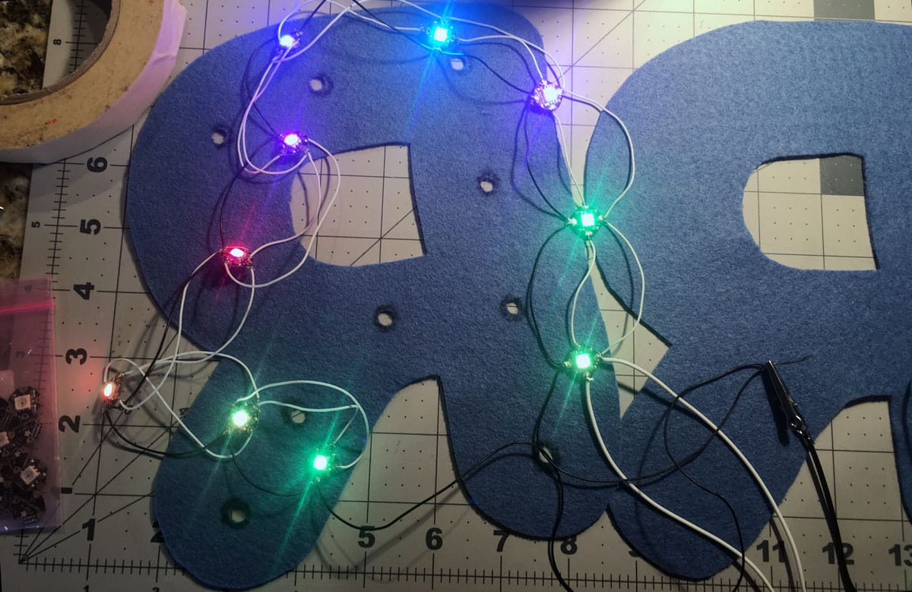
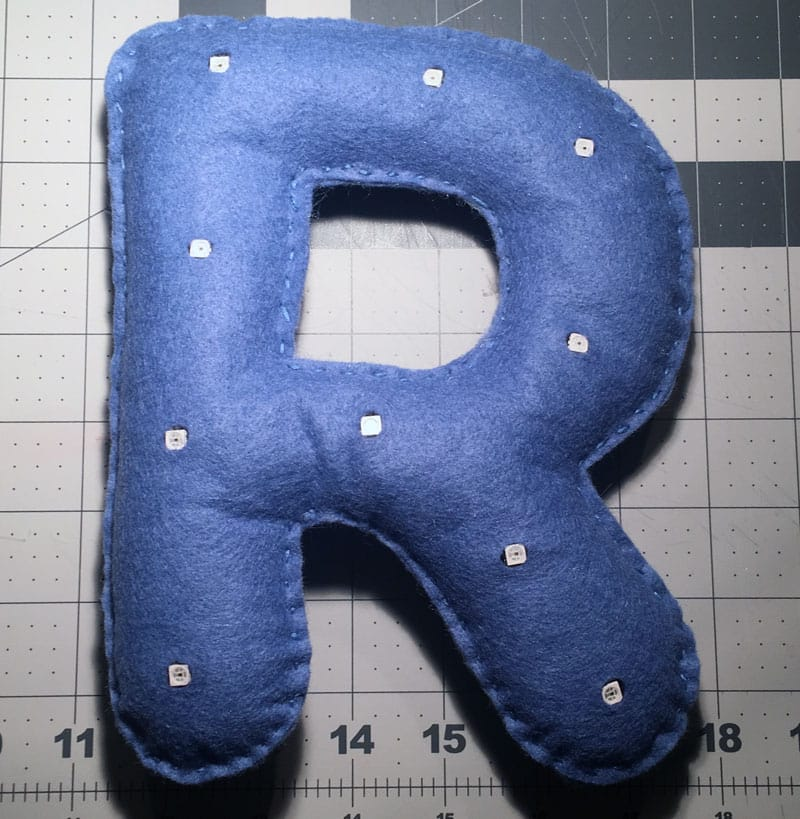
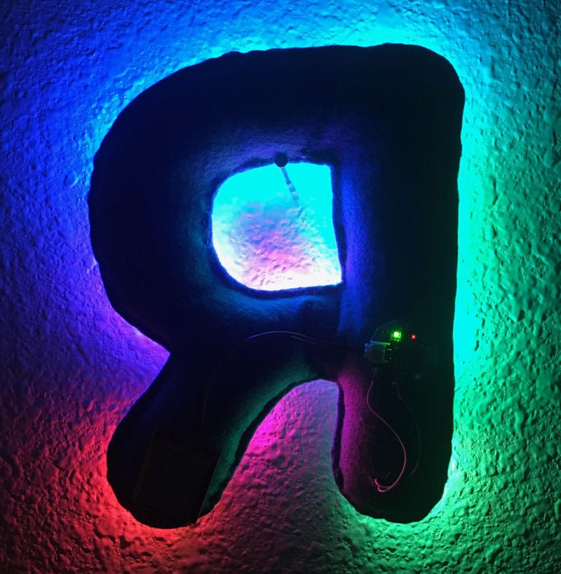
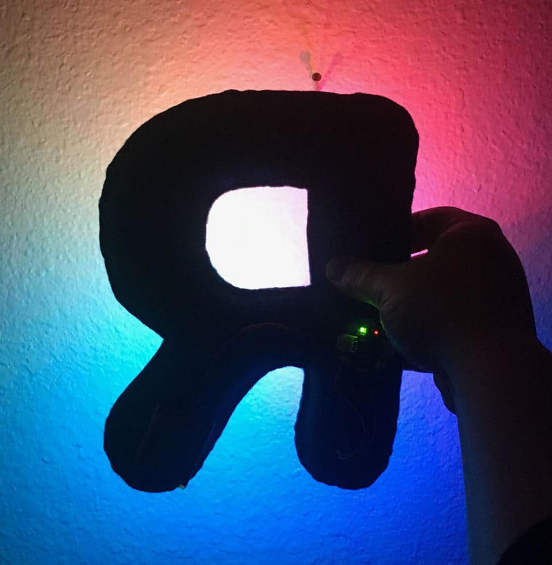
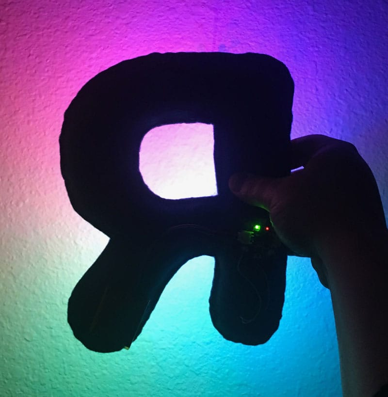

I love combining the traditionally masculine domain of technology with the traditionally female practice of crafting. I made this felt R as a prototype for an idea for a large sign with individually addressable LEDs which would animate in a subtle way. Here the felt R has 10 NeoPixel LEDs which are powered by an Adafruit Gemma and a 250 mHa LiPo battery.
Construction of the circuit and letters

Finished R with LEDs in place

The LEDs were quite bright so I flipped the R. I preferred the reflection of the lights off the wall to looking directly at the LEDs.

Pulling the LEDs further from the wall resulted in a more diffuse reflection. As the LEDs animated, the colors changed subtly.

My favorite color combination.

I used Photoshop to flip the orientation and to remove the hand and battery. This is why prototypes are key to any process. My idea changed completely once I saw a sample of the physical object.